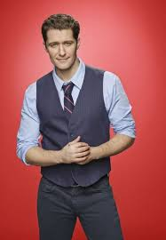

Glee é uma série musical de comédia e drama que conquistou público mundial ao retratar a trajetória de um grupo de estudantes integrantes do coral escolar New Directions, da fictícia William McKinley High School. Produzida pela [Disney+], a produção destaca temas como amizade, inclusão, diversidade e superação, combinando apresentações musicais marcantes com histórias emocionantes e atuais. Ao longo de suas temporadas, a série tornou-se referência na cultura pop por abordar questões sociais relevantes de forma leve e envolvente, além de apresentar releituras de grandes sucessos da música internacional que contribuíram para seu enorme sucesso entre diferentes gerações.

William Michael Schuester, carinhosamente chamado de mr. Schue, é um dos dois protagonistas principais da sérire. Will é professor de espanhol na William McKinley High School, até a terceira temporada, quando passa a lecionar historias. Sua maior missão na série é ressuscitar o New Directions, o clube de canto da escola que estava à beira do fracasso, transformando-o em um grupo competitivo e cheio de talento. Sua personalidade é marcante por ser gentil, compassivo, otimista e determinado. Will sempre está disposto a dar segundas chances e enxerga o lado positivo das situações. O que infelizmente, também o torna fácil de ser manioulado por pessoas em quem confia.
O Ian Brennan criador da serie, ele teve a ideia com base em suas próprias experiências no coral do ensino médio (show choir) da Prospect High School, em Mount Prospect, Illinois. Ele usou suas vivências adolescentes para escrever um roteiro original, que foi transformado em série de televisão pelos cocriadores Ryan Murphy e Brad Falchuk.
Rachel Berry é uma das personagens centrais da série Glee, interpretada por Lea Michele. Ela é apresentada como uma estudante do ensino médio extremamente talentosa, ambiciosa e determinada a se tornar uma estrela da Broadway. Desde o início da série, a Rachel se destaca por ter uma voz muito forte e técnica, além de um nível de disciplina acima da média. Ela entra no clube glee da escola, praticamente com o sonho de ser famosa já traçado, e isso guia muitas das decisões dela ao longo da história. O lado mais marcante da personagem é a combinação de talento com uma personalidade bem competitiva. Ela pode ser egoísta em alguns momentos, principalmente no começo da série, mas isso vai mudando conforme ela amadurece e aprende a trabalhar em grupo e lidar com rejeições e frustrações. A trajetória dela na série acompanha bem essa evolução: de uma adolescente focada só em vencer e ser reconhecida, para alguém que começa a entender mais sobre colaboração, relacionamentos e o custo real de seguir uma carreira artística.
Rachel Berry
Finn Hudson
William Schuester
Kurt Hummel
mercedes Jones
Artie Abrams
Tina Cohen-Chang
Quinn Fabray
Noah ou Puck
Santana Lopez
Brittany S. Pierce
Sue Sylvester
Emma Pillsbury